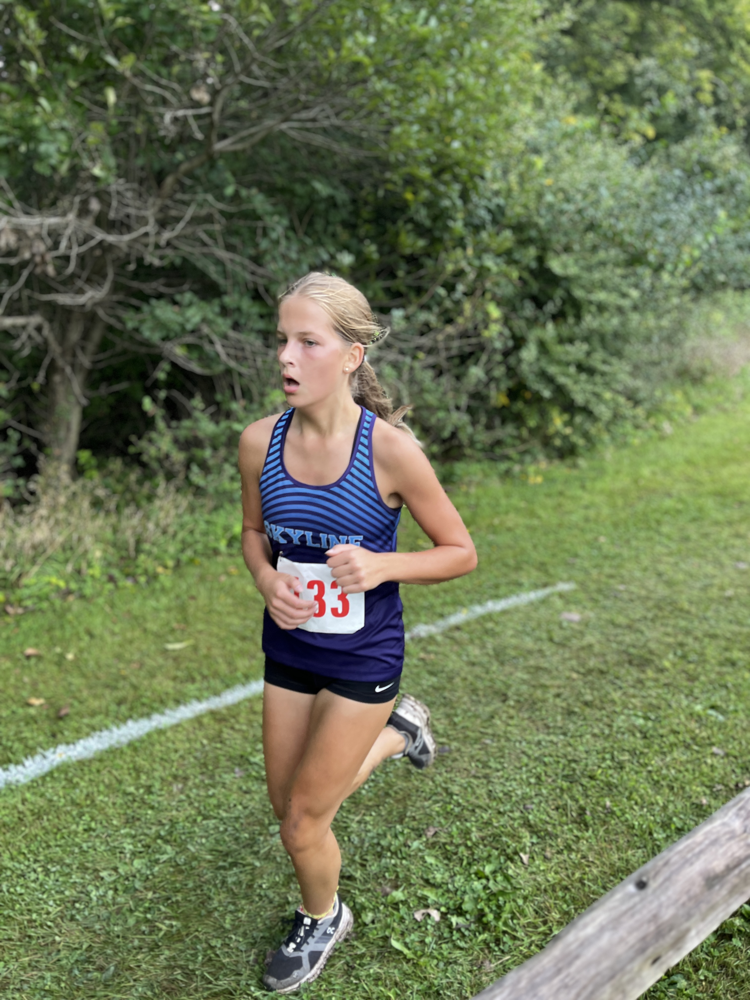
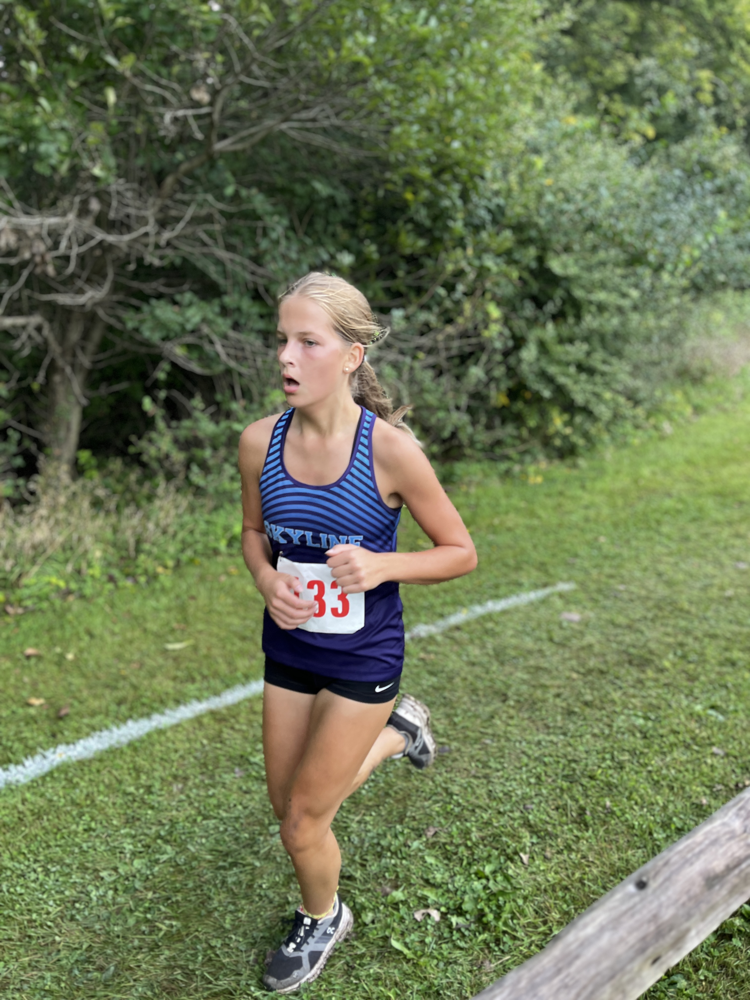
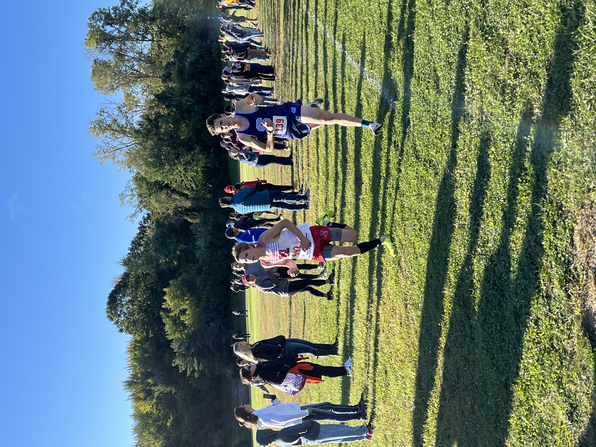
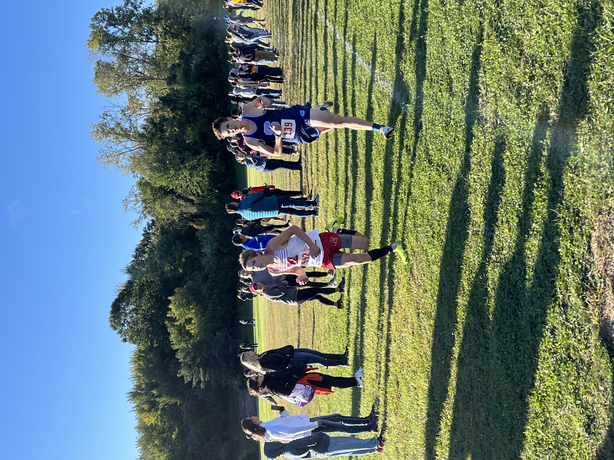
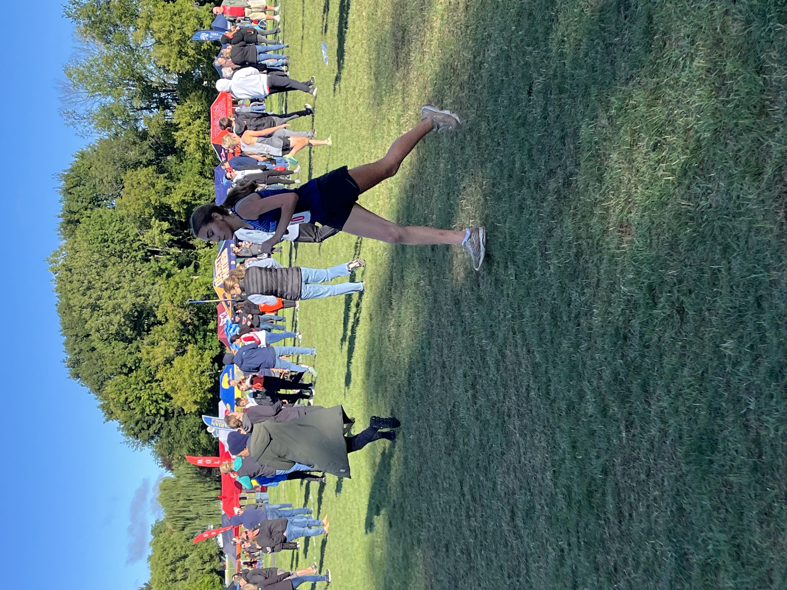
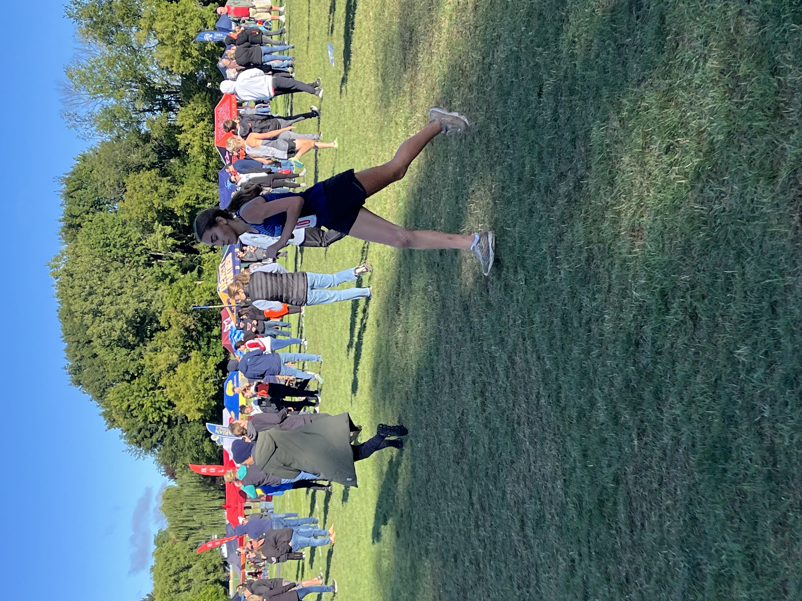

Bret Clements Bath Invitational Mens 5000 Meters Class 1
Sat Sep 7 2024
Race Summary
At the Bret Clements Bath Invitational, the Skyline men's team secured 4th place overall with a score of 147. Leading the team was Bruno Cifaldi, who finished with a season record (SR) time of 17:07.73. Nicholas Yuan followed closely, setting a personal record (PR) with a time of 17:13.08, and Jack Robichaud also achieved a PR with a time of 17:14.90. Other notable performances came from Kyle Krasan (17:43.36 PR) and Zeke Lafferty (17:57.73 SR), rounding out the top five for Skyline. The team's spread was just under a minute, showcasing strong depth as they competed against tough opponents.
Team Results
| Place | Team | Score |
|---|---|---|
| 1 | Chuck Block Timing | 20 |
| 2 | Northville | 62 |
| 3 | Saline | 105 |
| 4 | Okemos | 147 |
| 5 | Ann Arbor Skyline | 152 |
| 6 | Ann Arbor Huron | 157 |
| 7 | DeWitt | 182 |
| 8 | Holly | 209 |
| 9 | Fenton | 232 |
| 10 | East Lansing | 249 |
| 11 | Flushing | 327 |
Individual Results
Bruno Cifaldi
Place
24
Time
17:07.73
Grade
11
Nicholas Yuan
Place
27
Time
17:13.08
Grade
10
Jack Robichaud
Place
29
Time
17:14.90
Grade
12
Kyle Krasan
Place
38
Time
17:43.36
Grade
11
Zeke Lafferty
Place
47
Time
17:57.73
Grade
11
Oskar MacArthur
Place
51
Time
18:06.00
Grade
9
Martin Gehrke
Place
54
Time
18:17.76
Grade
9
Parker Razelun
Place
56
Time
18:19.01
Grade
12
Gustaf Finn
Place
58
Time
18:22.78
Grade
11
Gallery


 



 



 
